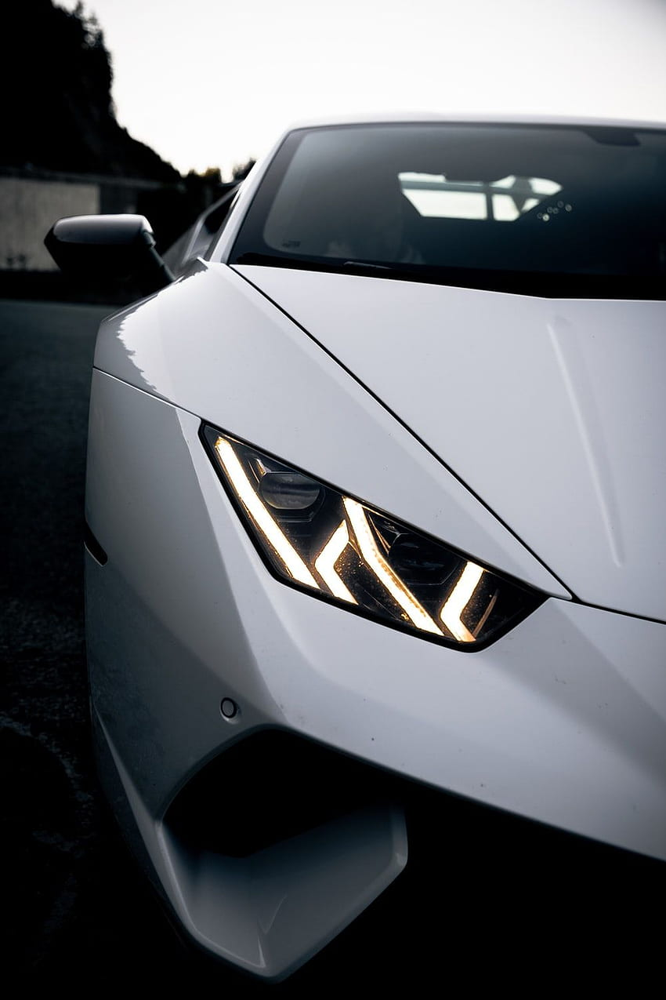

|  | ¿Que es Lamborghini?Automobili Lamborghini S.p.A., comúnmente conocido como Lamborghini ([lamboɾˈɡiːni] en italiano3 y [lamboɾˈɡini] español, 4 mal pronunciado habitualmente [lamboɾˈʝini]), es un fabricante italiano de automoviles super deportivos fundado en 1963 por Ferruccio Lamborghini, que anteriormente era un fabricante de tractores, cuya sede y oficinas centrales se encuentran ubicadas en Sant"agata Bolognese, provincia de Bolonia y que actualmente forma parte del Grupo Volkswagen. La empresa original se llamaba Automobili Ferruccio Lamborghini S.p.A ., que derivaba a su vez de Lamborghini Trattori S.A. Ferruccio se instaló en Sant'Agata Bolognese, provincia de Bolonia, a pocos kilómetros de Maranello, para rivalizar con su vecino Enzo Ferrari a raíz de una discusión por la calidad de sus coches.5 Algunos de los nombres de sus coches hacen referencia a nombres de toros de lidia indultados, como Murcielago, famosos o históricos como Diablo o Aventador, o simplemente palabras relacionadas con la tauromaquia como Miura, Espada o Urraco.6 Paralelamente a los superdeportivos con motor V12, se iba realizando otro modelo menos potente y «accesible», como el Urraco de 1972 con motor V8. Todos estos nombres son españoles y relacionados con la tauromaquia, que era la pasión de Ferruccio Lamborghini. Miura es un antiguo criador de toros bravos; Islero fue el célebre toro que mató al famoso torero manoleto. En general cada nombre se toma de un toro bravo «indultado», esto es, que se le haya perdonado la vida por su bravura y coraje en la pelea contra el matador, por lo que posteriormente era destinado como semental. Tales características eran afines con los automoviles, siempre según Ferruccio Lamborghini. De ahí el logotipo de la firma, que lleva por nombre "Toro de lidia" («Raging Bull»). Ya en los años 1990, apareció el sustituto del Countach: el Diablo, cuyo nombre viene de un bravo animal del siglo XIX lidiado por el torero Chicorro, el cual reclamaba para sí, como ya era costumbre en los modelos con motorización V12 de esta marca, el título de coche de producción más veloz del mundo, al superar los 320 km/h (199 mph). "Los Ferrari solamente me creaban problemas». «Un día, ya harto de mandarlos al taller, llamé a Enzo para decirle que sus coches eran pura basura". "Y me contestó que un fabricante de tractores no podía entender sus coches…"
Según las palabras del mismo Ferruccio Lamborghini |